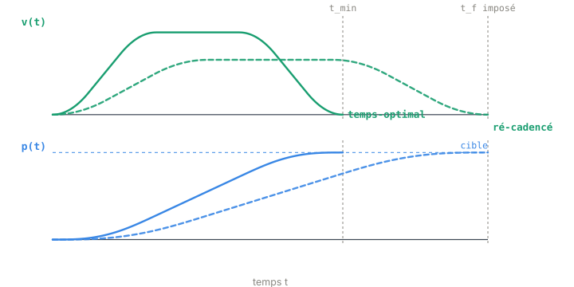

Chapitre 06
Step 2 — ré-cadencer à une durée imposée
Objectifs du chapitre
- Comprendre pourquoi l'on veut parfois un mouvement plus lent que le temps-optimal, d'une durée t_f imposée.
- Saisir que ré-cadencer un profil est un problème inverse sous contrainte de durée, pas une simple dilatation du temps.
- Découvrir comment ruckig-scl résout ce problème : familles « timed », solveur de racines robuste, validation.
1. Le besoin : imposer une durée, pas la minimiser
Au chapitre précédent, le Step 1 nous a donné la solution temps-optimale : la durée minimale t_min pour aller d'un état à l'autre sans violer vₘₐₓ, aₘₐₓ, jₘₐₓ. Mais aller le plus vite possible n'est pas toujours ce que l'on veut. Il arrive qu'on veuille un mouvement d'une durée exactement imposée t_f > t_min.
Deux raisons principales :
- La synchronisation multi-axes (chapitre 7). Chaque axe a sa propre durée minimale ; le plus lent fixe la cadence commune. Les axes rapides doivent alors attendre le plus lent pour arriver tous ensemble à la même t_f. Il faut donc savoir ralentir un axe rapide sur une durée choisie.
- Un plancher de durée demandé (
minimumDuration). L'application peut exiger qu'un mouvement ne descende jamais sous une durée donnée — par exemple pour lisser une cadence, ménager un processus, ou coordonner avec un autre équipement.
2. Le problème inverse : un profil valide de durée t_f
Le Step 2 résout donc la question inverse du Step 1 : au lieu de « quelle est la plus petite durée ? », on demande « construis-moi un profil valide dont la durée totale vaut exactement t_f », tout en respectant les mêmes bornes vₘₐₓ, aₘₐₓ, jₘₐₓ.

La figure le rend visible : pour aller moins vite sans dépasser les limites, le profil ré-cadencé étale son parcours. Sa vitesse de croisière est plus basse — typiquement vₘₐₓ n'est plus atteinte du tout — et l'accélération sollicite moins ses plateaux. Le mouvement reste doux et borné en jerk, simplement il occupe toute la fenêtre t_f.
Un profil ré-cadencé n'est pas une homothétie temporelle du profil temps-optimal. On ne peut pas juste « étirer l'axe du temps » d'un facteur t_f / t_min : cela diviserait le jerk et l'accélération, mais les limites cinématiques restent les mêmes. Ralentir en gardant vₘₐₓ, aₘₐₓ, jₘₐₓ inchangés impose une nouvelle résolution sous contrainte de durée, avec un profil de forme différente.
3. La résolution : re-résoudre les familles pour t_f fixé
Comme au Step 1, on ne connaît pas d'avance quelle famille de profil convient. On re-parcourt donc les familles, mais cette fois avec la durée t_f imposée comme donnée. Ajouter cette contrainte change la nature des équations : elle relie entre elles toutes les durées de segment, et fait grimper le degré du polynôme à résoudre.
Au Step 1, on cherchait la durée qui rend le déplacement égal à la cible. Au Step 2, on ajoute une équation supplémentaire : la somme des durées de segment doit valoir t_f.
Cette contrainte de durée en plus, couplée aux conditions de continuité, conduit à des équations de degré 5 ou 6. À ce degré, il n'existe plus de forme fermée pure fiable pour toutes les familles : on résout numériquement.
Le solveur employé n'est pas une simple itération de Newton lâchée à l'aveugle — trop fragile près des racines multiples. On procède en deux temps : on encadre d'abord une racine dans un intervalle sûr, puis on la raffine par un Newton sécurisé qui reste toujours dans cet encadrement. Chaque évaluation du polynôme se fait par le schéma de Horner. On atteint ainsi une précision de racine ≤ 1e-9, sans les divergences d'un Newton nu.
Toutes les durées t_f ne sont pas atteignables. D'abord, t_f < t_min est infaisable par définition : on ne peut pas aller plus vite que le temps-optimal. Ensuite — et c'est plus subtil — certaines durées tombent dans un intervalle bloqué (le Block du chapitre 5) : à cause des états initiaux/finaux de vitesse et d'accélération, aucune durée dans cet intervalle ne correspond à un profil valide. La durée imposée doit donc être réalisable ; c'est précisément le rôle du Block que de délimiter les durées valides avant d'appeler le Step 2.
Dans ruckig-scl, le Step 2 est porté par ComputeProfile1AxisTimed. Il tente les 8 familles « timed » — SolveTimedNone, SolveTimedAcc0, SolveTimedAcc1, SolveTimedAcc0Acc1, SolveTimedVel, SolveTimedAcc0Vel, SolveTimedAcc1Vel, SolveTimedAcc0Acc1Vel — chacune dans les 2 directions de motif (UDDU / UDUD). Les racines de degré 5–6 passent par PolyEval (évaluation de Horner) et ShrinkInterval (bracketing puis Newton sécurisé). Chaque candidat est validé par CheckProfile, qui ré-intègre le profil pour confirmer qu'il atteint bien la cible sans violer les bornes. Le paramètre d'entrée minimumDuration permet d'imposer un plancher de durée.
Le Step 2 s'exécute lors de la replanification (à chaque nouvelle consigne, ou à chaque cycle en mode online), pas dans l'évaluation cycle-à-cycle du profil déjà figé. C'est du calcul en nombre borné d'opérations : 8 familles × 2 directions, chacune résolue à ≤ 1e-9 — dimensionné pour tenir dans un temps de cycle automate.
// SCL — ré-cadencer un axe sur une durée imposée
// tFixed doit être ≥ tMin (Step 1) et réalisable (hors Block)
IF tFixed >= tMin THEN
ok := ComputeProfile1AxisTimed(inp, tFixed, prof);
END_IF;Récapitulatif
- Step 1 trouve la durée minimale t_min (temps-optimal) ; Step 2 construit un profil valide obéissant à une durée imposée t_f ≥ t_min.
- Ré-cadencer n'est pas une dilatation du temps : les limites vₘₐₓ/aₘₐₓ/jₘₐₓ restent fixes, c'est une nouvelle résolution — le profil « traîne » plus bas et n'atteint souvent plus vₘₐₓ.
- Imposer ∑ tᵢ = t_f élève le degré à 5–6 → pas de forme fermée pure : encadrement + Newton sécurisé, précision ≤ 1e-9.
- Pièges : t_f < t_min infaisable, et durées dans un intervalle bloqué ; le Block choisit les durées valides.
- Dans ruckig-scl :
ComputeProfile1AxisTimed; 8 famillesSolveTimed*× 2 directions ;PolyEval+ShrinkInterval;CheckProfile;minimumDuration. - Ces deux briques — trouver t_min, obéir à t_f — sont exactement ce qu'il faut pour la synchronisation multi-axes du chapitre 7.